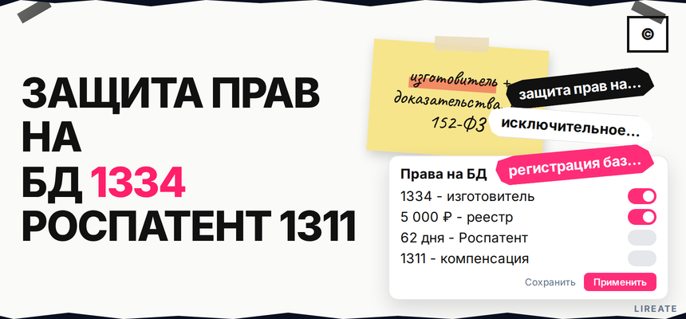
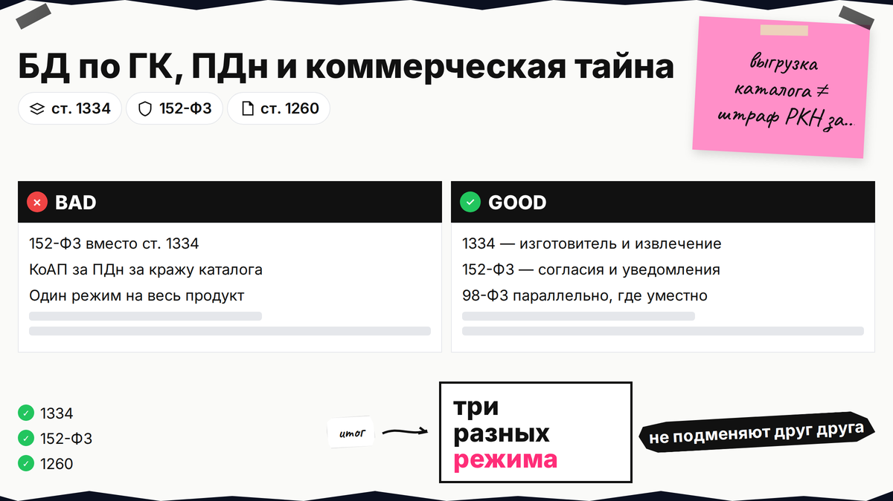
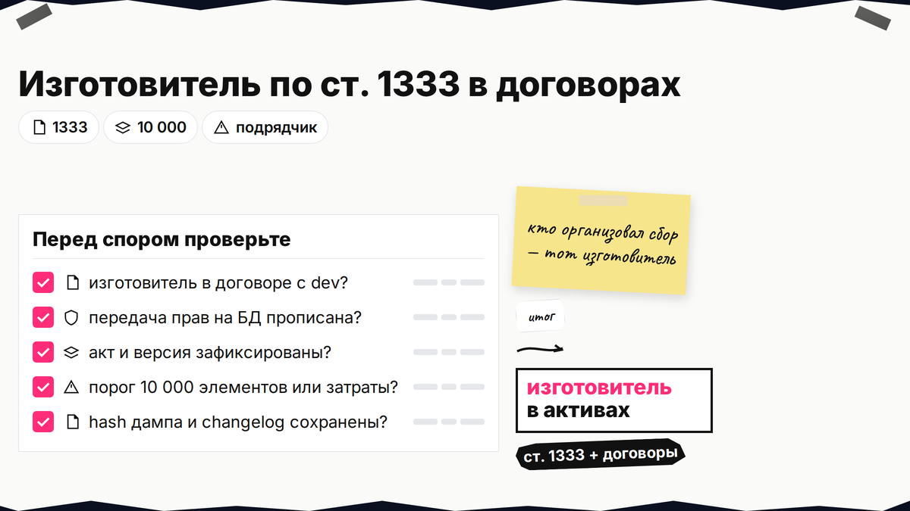
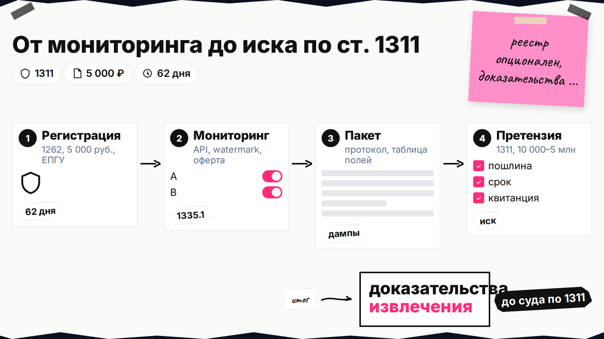

Конкурент выгрузил ваш каталог или прайс, а в поиске вам подсовывают статьи про штрафы РКН за персональные данные. Защита прав на базу данных по ГК РФ - другой режим: изготовитель, существенные затраты, извлечение материалов и компенсация по ст. 1311, а не КоАП за 152-ФЗ. Ниже вы отделите БД от ПДн, закрепите изготовителя в договорах, решите про регистрацию в Роспатенте и соберете пакет доказательств для претензии или суда, если кто-то скопировал существенную часть вашего справочника.

TL;DR / Быстрый инсайт: База данных по ст. 1260 ГК РФ - систематизированные для ЭВМ материалы; изготовитель (ст. 1333) получает исключительное право на извлечение и использование (ст. 1334), если создание требовало существенных затрат (презумпция от 10 000 элементов). Регистрация в Роспатенте по ст. 1262 добровольная, пошлина 5 000 руб., срок услуги 62 рабочих дня (подача через ЕПГУ, порядок — на странице услуги Роспатента). За незаконное извлечение существенной части спорят по ст. 1311, а не по штрафам за утечку ПДн.
Извлечение - перенос всего содержания или существенной части на другой носитель (п. 1 ст. 1334). 152-ФЗ и ст. 1334 не подменяют друг друга: спор о выгрузке каталога и проверка РКН по ПДн идут разными дорогами. Материал на 31.10.2026 не заменяет консультацию юриста.

Три колонки в чек-листе: смежное право на БД, compliance по ПДн и режим КТ по 98-ФЗ.
Запрос "защита прав на базу данных" часто ведет в материалы про Роскомнадзор; владельцу каталога нужна карта ИС.
| Режим | Что защищает | Типичный спор |
|---|---|---|
| БД, ст. 1260 и 1334 ГК | Подбор, структура, право изготовителя на извлечение и использование материалов | Конкурент скопировал выгрузку, API или зеркало каталога |
| ПДн, 152-ФЗ | Законность обработки персональных данных субъектов | Утечка, отсутствие согласия, проверка РКН |
| Коммерческая тайна, 98-ФЗ | Конфиденциальные сведения при режиме ст. 10 | Разглашение алгоритма сбора или закупочных условий (гайд по режиму КТ, L14 — ссылка после публикации на сайте) |
Делайте: вести три колонки в паспорте актива (ИС на БД, ПДн, КТ). Не делайте: считать политику обработки ПДн заменой договора с разработчиком на передачу прав изготовителя.

По ст. 1260 составителю принадлежит авторское право на подбор или расположение материалов. По ст. 1334 изготовитель получает смежное исключительное право на извлечение и последующее использование - оно действует независимо от прав на отдельные тексты или фото внутри записей (п. 2 ст. 1334).
Отдельные факты не охраняются, но структура полей и объем выгрузки могут дать существенную часть. Делайте: описать уникальность в реферате. Не делайте: полагаться на авторство текстов, если изготовитель - подрядчик без перехода прав.

Изготовитель - тот, кто организовал сбор и обработку; в SaaS это часто заказчик, если договор молчит.
Ст. 1333 называет изготовителем лицо, организовавшее создание БД и работу по сбору, обработке и расположению материалов; при отсутствии иного - лицо, указанное на экземпляре или упаковке.
Делайте: в договоре на разработку CRM, парсер или каталог прописать, что исключительные права на БД и статус изготовителя переходят заказчику, приложить акт сдачи и перечень таблиц. Не делайте: оставлять в интерфейсе только бренд подрядчика без лицензии на извлечение для вашей компании.
Право изготовителя возникает, если создание БД потребовало существенных затрат (п. 1 ст. 1334). Закон презюмирует такие затраты, когда в БД не менее 10 000 самостоятельных элементов материалов.
При меньшем числе записей соберите сметы, payroll и счета за источники. Делайте: хранить расчет рядом с дампом. Не делайте: дробить одну БД на микротаблицы ради формального порога.
Цепочка владельца актива: квалификация по ст. 1260 → изготовитель по ст. 1333 → договоры → внутренний акт и версия → (опционально) регистрация 1262 → мониторинг копий → претензия → иск по ст. 1311
Делайте: одну папку "ИС на БД" с версиями, договорами и перепиской. Не делайте: публиковать полный дамп в открытый доступ и потом требовать запрет на то, что уже легально извлекают с указанием источника в личных целях (ст. 1335.1).
Право возникает при завершении создания без обязательной регистрации (п. 3 ст. 1334). Свидетельство фиксирует дату и объем для суда; переход права по зарегистрированной БД требует госрегистрации (п. 5 ст. 1262). В заявку - депозит структуры, реферат, 5 000 руб., одна БД на заявку; дубликат - 1 300 руб. Делайте: подать до спора, если БД - ядро выручки. Не делайте: считать регистрацию технической защитой от парсинга.
Юридический пакет: свидетельство или акт, сравнение полей, переписка и расчет компенсации.
Суд признает нарушение при извлечении существенной части и встраивании в чужой сервис (практика СИП). Делайте: протокол осмотра, таблицу совпадений полей, скриншоты API. В претензии укажите прекращение, удаление копий и компенсацию по ст. 1311 (фиксированный диапазон или двукратная лицензия). Не делайте: ссылаться на ст. 13.11 КоАП за ПДн как на меру за кражу каталога.
Алгоритмы сбора и неопубликованные метрики закрывают 98-ФЗ параллельно с правом на БД (гайд по режиму КТ, L14 — ссылка после публикации на сайте). Делайте: комбинировать КТ и ст. 1334. Не делайте: объявлять весь сайт тайной без перечня.
Сохраните чек-лист к вашей БД: изготовитель, договоры, версия, решение о регистрации и шаблон претензии. Еще материалы по авторскому праву - в рубрике "Авторское право" на Лирейт. При споре с иностранным хостингом копии подключайте поверенного до публичной переписки.
Материал проверен: редакция Лирейт, практика регистрации объектов ИС и споров о базах данных.
Достоверность данных: ст. 1260, 1333-1336, 1262, 1335.1 и 1311 ГК РФ, пошлина 5 000 руб. по ст. 333.30 НК РФ, срок 62 рабочих дня и порядок услуги сверены с КонсультантПлюс и rospatent.gov.ru на 31.10.2026. Показы Яндекс Вордстат в среде подготовки материала не запрашивались.
Нет. Исключительное право изготовителя возникает при завершении создания БД, если выполнены условия ст. 1334. Регистрация добровольная и помогает доказывать дату и объем в споре, а также оформлять переход права по зарегистрированной БД.
Ст. 1260 защищает творческий подбор и расположение как составное произведение. Ст. 1334 дает изготовителю смежное право запрещать извлечение и использование материалов БД в коммерческих сценариях, даже когда отдельные элементы не охраняются авторским правом.
Нет. Цены, адреса и иные факты сами по себе не становятся вашей собственностью. Охраняется систематизация, объем и существенная часть при извлечении, а не каждая строка как "авторский текст".
Извлечение - перенос всего содержания или существенной части на другой носитель любыми техническими средствами. Существенность оценивают по объему, значимости материалов для инвестиций изготовителя и влиянию на рынок; мелкие выборки могут попасть под исключения ст. 1335.1.
Массовое или систематическое копирование существенной части для своего сервиса не превращается в "несущественную часть" из-за дробления запросов. Для публичных БД закон допускает отдельные случаи личного, научного или образовательного использования с указанием источника - коммерческое зеркало под это не подходит.
Ст. 1311 позволяет выбрать фиксированную сумму в установленном диапазоне или двукратную стоимость права использования. Суды часто опираются на рыночные лицензии и договоры; приложите расчет и проект лицензии с ценой доступа к аналогичному объему данных.
152-ФЗ регулирует обработку ПДн субъектов (согласия, уведомления, меры защиты). Ст. 1334 защищает ваш труд по сбору и систематизации материалов как БД. Один продукт может требовать compliance по ПДн и отдельный пакет по ИС на структуру и выгрузки без ПДн или с обезличиванием в доказательствах.